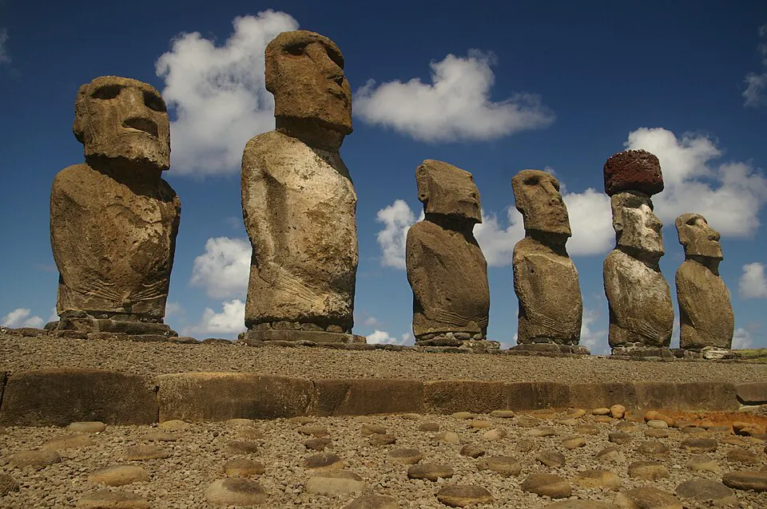

Rapa Nui y los moai

Rapa Nui fue poblada por navegantes polinésicos, en uno de los grandes logros de la navegación antigua. La fecha de llegada se discute: los estudios proponen entre los siglos IX y XIII d.C. Según la tradición oral, el primer ariki (jefe supremo) fue Hotu Matu'a.
La sociedad del pueblo rapanui se organizó en linajes que construyeron ahu, plataformas ceremoniales sobre las que se levantaron los moai. Estas esculturas, talladas sobre todo en la toba volcánica de la cantera de Rano Raraku, representan a ancestros y concentraban su mana, o poder espiritual. Se han registrado cerca de novecientas. La tradición dice que los moai "caminaron" hasta sus ahu, y algunos experimentos muestran que pudieron moverse de pie, balanceados con cuerdas. Más tarde surgió el culto del Tangata Manu (hombre pájaro) en Orongo.
Durante años se difundió la idea de que los rapanui causaron su propio colapso al deforestar la isla. Investigaciones recientes matizan esa visión y subrayan el impacto del contacto europeo desde 1722, en especial las epidemias y las incursiones esclavistas de 1862–1863. La isla fue anexada a Chile en 1888 (Incorporación de Rapa Nui).
Versión para niños
Hace muchos siglos, navegantes de la Polinesia cruzaron el océano Pacífico en grandes canoas y llegaron a una isla solitaria: Rapa Nui. Allí nació el pueblo rapanui. Ellos tallaron en piedra volcánica cientos de moai, grandes estatuas que representan a sus antepasados importantes. Los moai se colocaban sobre plataformas llamadas ahu, cerca de las aldeas, para protegerlas. Los rapanui también tenían una escritura propia, el rongorongo, que nadie ha logrado descifrar todavía.
Para maestros
Nivel sugerido: 2° básico
Objetivo: Conocer el origen polinésico del pueblo rapanui y el significado de los moai para su cultura. La fecha lleva "c." porque la llegada de los primeros habitantes es discutida: las investigaciones proponen fechas entre los siglos IX y XIII.
Preguntas para la clase:
- ¿Cómo crees que los navegantes polinésicos encontraron una isla tan lejana?
- ¿Qué representan los moai para el pueblo rapanui?
- ¿Por qué es importante cuidar los moai y los sitios sagrados de la isla?
Actividad (20–30 min): Con un mapa del océano Pacífico, los estudiantes trazan el "triángulo polinésico" (Hawái, Nueva Zelanda y Rapa Nui) y conversan sobre las distancias. Luego modelan un moai en plasticina y escriben qué persona importante de su familia o comunidad les gustaría recordar.
Fuentes sugeridas: Museo Chileno de Arte Precolombino; Memoria Chilena; Biblioteca Nacional Digital.
Objetivos de Aprendizaje (Currículum Nacional)
- 2° básico · HI02 OA 01 Describir los modos de vida de algunos pueblos originarios de Chile en el periodo precolombino, incluyendo ubicación geográfica, medio natural en que habitaban
- 2° básico · HI02 OA 02 Comparar el modo de vida y expresiones culturales de algunos pueblos indígenas presentes en Chile actual (como mapuche, aimara o rapa nui)
- 2° básico · HI02 OA 05 Reconocer diversas expresiones del patrimonio cultural del país y de su región, tales como … monumentos y sitios históricos
Revisión humana pendiente. Cómo se revisa · Reportar un error
Cómo citar: Historia de Chile. (2026). Rapa Nui y los moai. En Historia de Chile: atlas y línea de tiempo. https://moises-salgado.github.io/historia-de-chile/momento/rapa-nui-y-los-moai.html